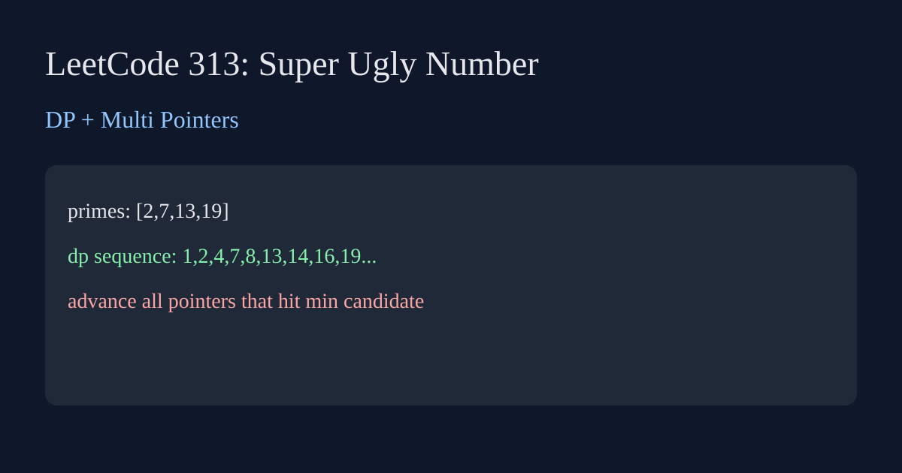

LeetCode 313: Super Ugly Number (Dynamic Programming + Multi Pointers)
Source: https://leetcode.com/problems/super-ugly-number/

English
Use DP and one pointer per prime. At each step choose the minimum candidate, append it, and move every pointer that produced this minimum to avoid duplicates.
class Solution { public int nthSuperUglyNumber(int n, int[] primes){int m=primes.length;int[] idx=new int[m],dp=new int[n];long[] nxt=new long[m];dp[0]=1;for(int i=0;ifunc nthSuperUglyNumber(n int, primes []int) int { m:=len(primes); idx:=make([]int,m); nxt:=make([]int64,m); dp:=make([]int,n); dp[0]=1; for i,p:=range primes{nxt[i]=int64(p)}; for i:=1;iint nthSuperUglyNumber(int n, vector<int>& primes){int m=primes.size();vector<int> idx(m),dp(n,1);vector<long long> nxt(m);for(int i=0;iclass Solution:
def nthSuperUglyNumber(self, n: int, primes: list[int]) -> int:
m=len(primes); idx=[0]*m; nxt=primes[:]; dp=[1]*n
for i in range(1,n):
mn=min(nxt); dp[i]=mn
for j in range(m):
if nxt[j]==mn:
idx[j]+=1; nxt[j]=dp[idx[j]]*primes[j]
return dp[-1]function nthSuperUglyNumber(n, primes){const m=primes.length,idx=Array(m).fill(0),nxt=primes.map(BigInt),dp=Array(n).fill(1n);for(let i=1;i<n;i++){let mn=nxt[0];for(let j=1;j<m;j++)if(nxt[j]<mn)mn=nxt[j];dp[i]=mn;for(let j=0;j<m;j++)if(nxt[j]===mn){idx[j]++;nxt[j]=dp[idx[j]]*BigInt(primes[j]);}}return Number(dp[n-1]);}中文
用动态规划加多指针。每个质数维护一个指针，候选值取最小并写入 dp。若多个候选都等于最小值，这些指针都要前进，避免重复。
class Solution { public int nthSuperUglyNumber(int n, int[] primes){int m=primes.length;int[] idx=new int[m],dp=new int[n];long[] nxt=new long[m];dp[0]=1;for(int i=0;ifunc nthSuperUglyNumber(n int, primes []int) int { m:=len(primes); idx:=make([]int,m); nxt:=make([]int64,m); dp:=make([]int,n); dp[0]=1; for i,p:=range primes{nxt[i]=int64(p)}; for i:=1;iint nthSuperUglyNumber(int n, vector<int>& primes){int m=primes.size();vector<int> idx(m),dp(n,1);vector<long long> nxt(m);for(int i=0;iclass Solution:
def nthSuperUglyNumber(self, n: int, primes: list[int]) -> int:
m=len(primes); idx=[0]*m; nxt=primes[:]; dp=[1]*n
for i in range(1,n):
mn=min(nxt); dp[i]=mn
for j in range(m):
if nxt[j]==mn:
idx[j]+=1; nxt[j]=dp[idx[j]]*primes[j]
return dp[-1]function nthSuperUglyNumber(n, primes){const m=primes.length,idx=Array(m).fill(0),nxt=primes.map(BigInt),dp=Array(n).fill(1n);for(let i=1;i<n;i++){let mn=nxt[0];for(let j=1;j<m;j++)if(nxt[j]<mn)mn=nxt[j];dp[i]=mn;for(let j=0;j<m;j++)if(nxt[j]===mn){idx[j]++;nxt[j]=dp[idx[j]]*BigInt(primes[j]);}}return Number(dp[n-1]);}